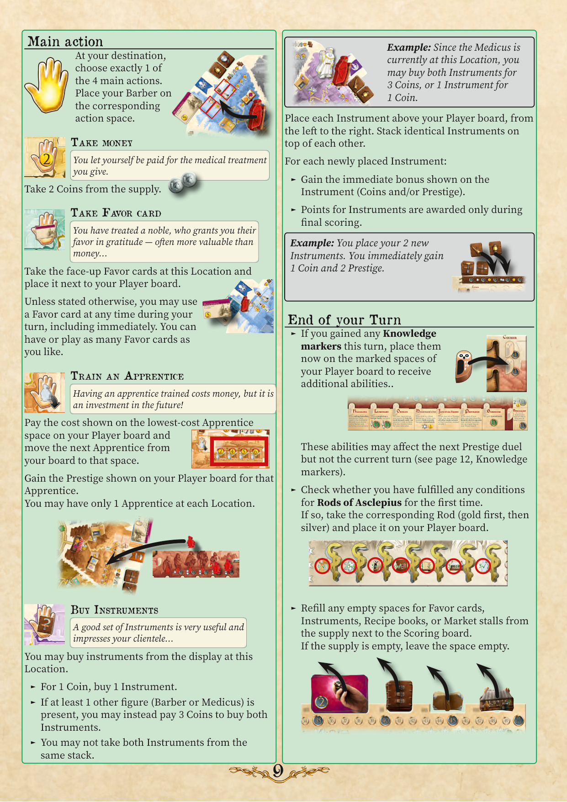

7主要行动
在目的地，从 4 个主要行动中选 恰好 1 个。将理发师放在对应行动格。
7.1 拿取金钱
你为所提供的医疗诊治收取报酬。从供应区拿取 2 枚钱币。
7.2 拿取恩惠卡牌
你诊治了贵族，其感激授予你恩惠——往往比钱更有价值……拿取此地点正面朝上的恩惠卡牌放在玩家面板旁。除非另有说明，你可在回合中任何时候（含立即）使用恩惠卡牌。你可持有或打出任意多张恩惠卡牌。
7.3 训练学徒
训练学徒要花钱，但是对未来的投资！支付玩家面板上最低费用学徒格所示费用，将玩家面板上下一个学徒移到该格。获得该学徒在玩家面板上所示的声望。每个地点你最多只能有 1 个学徒。
7.4 购买器械
一套好器械非常实用，也能给顾客留下印象……你可从此地点的展示区购买器械。
- ► 支付 1 枚钱币购买 1 件器械。
- ► 若有至少 1 个其他棋子（理发师或医者）在场，可改支付 3 枚钱币购买两件器械。
- ► 不得从同一叠拿取两件器械。
例：因医者当前在此地点，你可支付 3 枚钱币购买两件器械，或支付 1 枚钱币购买 1 件。每件器械放在玩家面板上方，从左到右。相同器械叠放。每放置 1 件新器械：获得器械所示的立即奖励（钱币和/或声望）；器械的分数仅在最终计分授予。
7.5 回合结束
- ► 若本回合获得知识标记，现在放在玩家面板标记格以获得额外能力。这些能力可能影响下次声望对决，但不影响当前回合（见第 12 页，知识标记）。
- ► 检查是否首次满足医神之杖条件。若是，拿取对应之杖（先金后银）放在玩家面板。
- ► 从计分板旁的供应区补充恩惠卡牌、器械、配方书或市场摊位的空位。若供应区空，留空。
